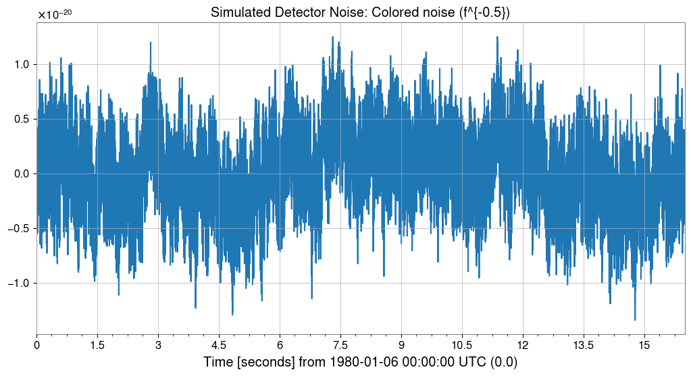
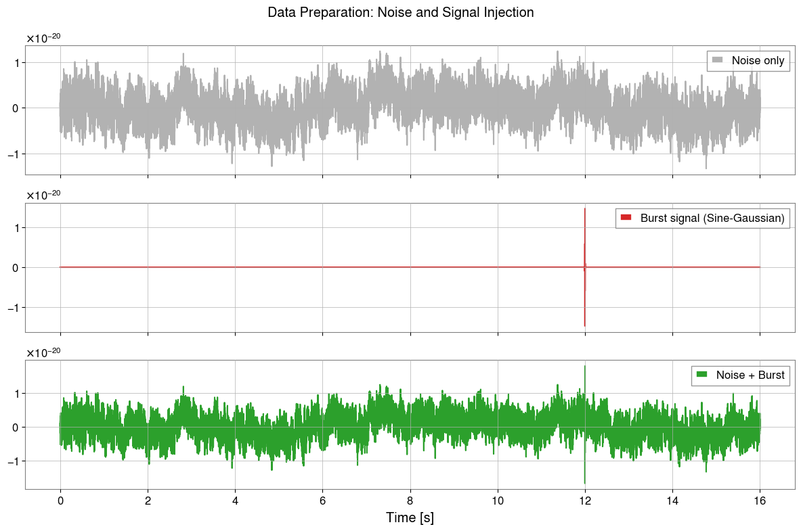

Note
This page was generated from a Jupyter Notebook. Download the notebook (.ipynb)
ARIMA-Based Burst Detection
Idea sketch for burst gravitational-wave searches

Introduction
Detector data are dominated by approximately stationary background noise, while burst gravitational waves (for example from core-collapse supernovae) appear as short, non-stationary transients embedded in that noise.
This notebook demonstrates the idea of using an autoregressive model (ARIMA) to learn the stationary background and make burst-like residuals stand out. It is a simple example of an unmodeled search strategy that does not rely on waveform templates.
References
Autoregressive Search of Gravitational Waves: Denoising (ARIMA_DeNoise.pdf)
BEACON: Autoregressive Search for Unmodeled transients (BEACON.pdf)
Sparkler: Autoregressive Search of Unmodeled GW (Sparkler_1min.pdf)
[1]:
import warnings
import matplotlib.pyplot as plt
import numpy as np
warnings.filterwarnings("ignore", category=FutureWarning)
warnings.filterwarnings("ignore", category=UserWarning)
from gwexpy.timeseries import TimeSeries
from gwexpy.noise.wave import gaussian, sine, from_asd, colored
1. Generate detector noise
First we simulate detector background noise. When available we use an aLIGO design-sensitivity model; otherwise we fall back to generic colored noise.
[2]:
# === パラメータ ===
sample_rate = 4096 # Hz
duration = 16 # seconds
seed = 42
# === ノイズ生成 ===
try:
from gwexpy.noise.gwinc_ import from_pygwinc
# aLIGO 感度曲線の取得
asd = from_pygwinc("aLIGO", fmin=10.0, fmax=sample_rate/2, df=1.0/duration)
# ASD から時系列ノイズを生成
noise = from_asd(asd, duration=duration, sample_rate=sample_rate, seed=seed,
name="aLIGO_noise")
noise_model_name = "aLIGO (pygwinc)"
except ImportError:
# pygwinc が無い場合のフォールバック: べき則 colored noise (1/f)
noise = colored(duration=duration, sample_rate=sample_rate,
exponent=0.5, amplitude=1e-21, seed=seed,
name="colored_noise")
noise_model_name = "Colored noise (f^{-0.5})"
print(f"ノイズモデル: {noise_model_name}")
print(f"サンプル数: {len(noise)}, dt={noise.dt}s, duration={duration}s")
noise.plot()
plt.title(f"Simulated Detector Noise: {noise_model_name}")
plt.show()
ノイズモデル: Colored noise (f^{-0.5})
サンプル数: 65536, dt=0.000244140625 ss, duration=16s

2. Inject a burst signal
We inject a sine-Gaussian burst into the second half of the data and use it as the test segment.
[3]:
def make_sine_gaussian(duration, sample_rate, t_center, freq, tau, amplitude, t0=0.0):
"""Sine-Gaussian パルスを生成する"""
t = np.arange(0, duration, 1.0/sample_rate)
envelope = amplitude * np.exp(-((t - t_center)**2) / (2 * tau**2))
signal = envelope * np.sin(2 * np.pi * freq * (t - t_center))
return TimeSeries(signal, sample_rate=sample_rate, t0=t0,
name=f"SG_burst_f{freq}_tau{tau}")
# === バースト信号パラメータ ===
burst_time = 12.0 # 注入時刻（後半 8 秒のどこか）
burst_freq = 250.0 # Hz
burst_tau = 0.002 # 秒
# SNR がおよそ 5 程度になるように振幅を調整
std_noise = float(noise.value.std())
burst_amp = 5.0 * std_noise
burst = make_sine_gaussian(duration, sample_rate, burst_time,
burst_freq, burst_tau, burst_amp)
# === 注入 ===
data_with_signal = TimeSeries(
noise.value + burst.value,
sample_rate=sample_rate, t0=noise.t0,
name="data_with_burst"
)
# === 可視化 ===
fig, axes = plt.subplots(3, 1, figsize=(12, 8), sharex=True)
axes[0].plot(noise, label="Noise only", color="gray", alpha=0.6)
axes[0].legend(loc="upper right")
axes[1].plot(burst, label="Burst signal (Sine-Gaussian)", color="tab:red")
axes[1].legend(loc="upper right")
axes[2].plot(data_with_signal, label="Noise + Burst", color="tab:green")
axes[2].legend(loc="upper right")
plt.suptitle("Data Preparation: Noise and Signal Injection")
plt.xlabel("Time [s]")
plt.tight_layout()
plt.show()

3. Learn the background with ARIMA
We fit an ARIMA model on the first 8 seconds, where no burst is present, so that the model captures the stationary background statistics. The data are moderately downsampled to keep the example lightweight.
[ ]:
# === トレーニングデータの準備 ===
# 最初の 8 秒をトレーニング区間とする
train_end_idx = int(8.0 * sample_rate)
# ダウンサンプル (4096 Hz -> 512 Hz)
downsample_factor = 8
train_data = data_with_signal[:train_end_idx:downsample_factor]
print(f"Training data: {len(train_data)} samples, Fs={train_data.sample_rate} Hz")
# fit_arima: Auto-ARIMA で最適次数を自動選択 (時間は少々かかります)
# ここでは探索範囲を限定して高速化。pmdarima が無い場合は固定次数にフォールバックします。
try:
result = train_data.fit_arima(auto=True, auto_kwargs={"max_p": 3, "max_q": 3, "seasonal": False})
print("\nARIMA Fit Summary (Auto-ARIMA):")
except ImportError:
print("\npmdarima not found. Falling back to fixed order (3, 0, 1).")
result = train_data.fit_arima(order=(3, 0, 1), trend="c")
print("\nARIMA Fit Summary (Fixed Order):")
print(result.summary())
4. Compute residuals and detect anomalies
We apply the fitted model to the remaining data and inspect the residuals. Stationary noise should leave small residuals, while an unmodeled burst produces a localized excess.
[ ]:
# === テストデータへの適用 ===
test_data = data_with_signal[train_end_idx::downsample_factor]
# 学習モデルの次数を適用して残差を求める
order = result.res.model_orders
test_result = test_data.fit_arima(order=(order['ar'], 0, order['ma']), trend="c")
test_resid = test_result.residuals()
# === 閾値判定 (5-sigma) ===
# トレーニング区間の残差の標準偏差から閾値を設定
train_resid = result.residuals()
sigma = float(train_resid.value.std())
threshold = 5.0 * sigma
# トリガー検出
trigger_mask = np.abs(test_resid.value) > threshold
# === 可視化 ===
fig, ax = plt.subplots(figsize=(12, 5))
ax.plot(test_resid, label="Residuals", color="gray", alpha=0.7)
ax.axhline(threshold, color="red", ls="--", label=f"Detection Threshold (5-sigma)")
ax.axhline(-threshold, color="red", ls="--")
if np.any(trigger_mask):
t_test = test_resid.times.value
ax.scatter(t_test[trigger_mask], test_resid.value[trigger_mask],
color="tab:red", s=40, zorder=5, label="Trigger Detected")
ax.set_xlabel("Time [s]")
ax.set_ylabel("Amplitude")
ax.set_title("Search Results: Residuals and Triggers")
ax.legend(loc="upper right")
ax.grid(True, alpha=0.3)
plt.show()
5. Evaluate performance versus SNR
Finally we repeat the injection for several signal-to-noise ratios to estimate how the residual-based detection responds as the burst becomes weaker.
[ ]:
# シンプルなモンテカルロ評価
snr_values = [2, 3, 4, 5, 7, 10]
n_trials = 5
detection_rates = []
# 前回の次数を使用
order_tuple = (order['ar'], 0, order['ma'])
print("Evaluating SNR sensitivity...")
for snr in snr_values:
hits = 0
for i in range(n_trials):
# 新しいノイズ実現
n_val = colored(duration=4, sample_rate=sample_rate, exponent=0.5, seed=snr*100+i).value
s_val = make_sine_gaussian(4, sample_rate, 2.0, burst_freq, burst_tau, snr * n_val.std()).value
trial_ts = TimeSeries(n_val + s_val, sample_rate=sample_rate)[::downsample_factor]
# フィットとチェック
try:
res = trial_ts.fit_arima(order=order_tuple)
if np.any(np.abs(res.residuals().value) > 5.0 * sigma):
hits += 1
except:
continue
detection_rates.append(hits / n_trials)
plt.figure(figsize=(8, 4))
plt.plot(snr_values, detection_rates, 'o-')
plt.xlabel("Injected SNR")
plt.ylabel("Detection Rate")
plt.title("Sensitivity Curve (Approximation)")
plt.ylim(-0.1, 1.1)
plt.grid(True)
plt.show()
Summary
Key ideas behind ARIMA-based burst searches
Background suppression: model and subtract stationary noise to improve the visibility of weak transients.
Residual analysis: monitor deviations from the expected residual distribution to identify unmodeled events.
Production pipelines such as BEACON extend this idea to multiple channels and coherence checks, but this notebook captures the core intuition in a compact example.